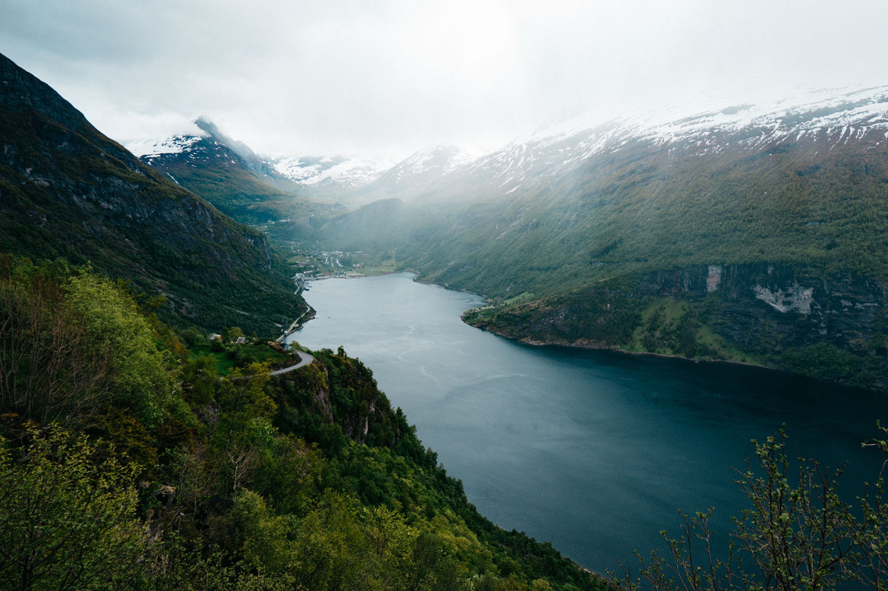

Калифо́рния (англ. California, произносится [kælɨˈfɔrnjə] Информация о файле слушать) — штат США, расположенный на западном побережье страны, на берегу Тихого океана. Граничит с американскими штатами Орегон (на севере), Невада (на востоке) и Аризона (на юго-востоке), а также с мексиканским штатом Нижняя Калифорния (на юге). Калифорния — 31-й штат США, он был образован 9 сентября 1850 года. До этого Калифорния в разное время находилась под властью Испании и Мексики.
